10 交互作用与多项式
从模型到意义 - 中文翻译
Source: Vincent Arel-Bundock, Model to Meaning: How to Interpret Statistical Models in R and Python - Chapter 10 Interactions and polynomials. Source note: As of 2026-09-19, the public repository at revision 870f15a0 does not contain the full .qmd source for this chapter. This page is translated from the public HTML snapshot downloaded on the same date. R/Python code and figures are therefore shown statically; upstream code was not re-executed on this site. Website text (C) 2025 Vincent Arel-Bundock, All Rights Reserved; the marginaleffects software code is licensed under GPL-3. This page is a Chinese translation, not the original; it is translated and published under the authorization statement used by this Notes site.
So far, the models that we have considered were relatively simple. In this chapter, we apply the same workflow, framework, and software introduced in Parts I and II of the book to interpret estimates from slightly more complex specifications. Our goal is to address two related issues: heterogeneity and flexibility.
We say that there is “heterogeneity” when the association between an independent variable and a dependent variable varies across contexts, or based on the characteristics of our objects of study. For instance, a new medical treatment might significantly reduce blood pressure in younger adults, but have a weaker effect on older ones. Or a marketing campaign may increase sales in rural areas but not urban ones. Applied statisticians use different expressions to describe such situations: heterogeneity, moderation, interaction, effect modification, context-conditionality, or strata-specific effects. In this chapter, we use these expressions interchangeably to describe situations where the strength of association between two variables depends on a third: the moderator.1
The second issue that this chapter tackles is flexibility. Many of the statistical models that data analysts fit are relatively simple and rigid; they often rely on linear approximations of the data generating process. Such approximations may not be appropriate when the relationships of interest are complex or non-linear.2 In environmental science, for example, the relationship between temperature and crop yield is often non-linear: as temperatures rise, crop yields may initially increase due to optimal growing conditions, but eventually decline as heat stress becomes detrimental.
Complex relationships and heterogeneous effects are present in virtually all empirical domains. This chapter shows that the conceptual framework and software tools presented in earlier parts of this book can be applied in straightforward fashion to gain insights into complex phenomena. We will focus on two modeling strategies to account for heterogeneity and increase the flexibility of our models: multiplicative interactions and polynomials.
These two approaches do not exhaust the set of techniques that researchers may want to deploy to study complex phenomena, but the same ideas and workflows can be applied to interpret even more flexible models. Readers who wish to go further in that direction can turn to Chapter 13 on Machine Learning or visit marginaleffects.com for tutorials on Generalized Additive Models, splines, and more.
10.1 Multiplicative interactions
We say that there is heterogeneity when the strength of the association between an explanator \X\ and an outcome \Y\ varies based on the value of a moderator \M\. The association between \X\ and \Y\ can be stronger, weaker, or completely reversed for different values of \M\. Typically, \M\ is a variable which measures contextual elements, or features of the individuals, groups, or units under observation.
One common strategy to study moderation is to fit a statistical model with multiplicative interactions (Brambor et al. 2006; Kam and Jr. 2009; Clark and Golder 2023). This involves creating a new composite variable by multiplying the explanator (\X\) to the moderator (\M\). Then, we insert the interacted variable as a predictor in the model, alongside its individual components.3 One popular specification for this type of moderation analysis is a simple linear model with one interaction.
\ Y = _1 + _2 X + _3 M + _4 X M + , \
where \Y\ is the outcome, \X\ is the predictor of interest, and \M\ is a contextual variable which moderates the relationship between \X\ and \Y\.
To characterize the association between \X\, \M\, and \Y\, we can plug the values of these variables into Equation 10.1. When \M=0\, moving from \X=0\ to \X=1\ is associated with an increase of \_2\ in predicted \Y\.
\\
In contrast, when \M=1\, a change from \X=0\ to \X=1\ is associated with a change of \_2+_4\ in predicted \Y\.
\\
The difference between these two results shows what we mean by heterogeneity, moderation, or effect modification: the strength of association between a dependent and an independent variable varies based on the value of a moderator.
The parameters in Equation 10.1 are fairly straightforward to grasp, and we can interpret them using a little algebra. However, as soon as a model includes non-linear components or more than one interaction, it quickly becomes very difficult to interpret coefficient estimates directly. This book has argued that it is usually best to ignore raw coefficients, and to focus on more interpretable quantities, like predictions, counterfactual comparisons, and slopes. We will follow the same advice here.
When models include interactions, the presentation of results can depend on the nature of X and M. In what follows, we consider different scenarios where the predictor and moderator are categorical or numeric variables.
10.1.1 Categorical-by-categorical
The first case to consider is when the association between a categorical explanator \X\ and an outcome \Y\ is moderated by a categorical variable \M\. For example, this could occur if the effect of a drug (\X\) on patient recovery (\Y\) varies across different age groups (\M\).
Let’s consider a simulated dataset with three variables: the outcome \Y\ and the treatment \X\ are binary variables, and the moderator \M\ is a categorical variable with 3 levels (a, b, and c).
library(marginaleffects)
library(ggplot2)
library(patchwork)
dat = get_dataset("interaction_01")
head(dat)
Y X M
1 1 0 a
2 1 1 b
3 1 0 a
4 0 0 a
5 1 0 c
6 1 1 a
import polars as pl
import numpy as np
from marginaleffects import *
from statsmodels.formula.api import logit, ols
dat = get_dataset("interaction_01")
dat = dat.with_columns(pl.col('M').cast(pl.Categorical))
def fivenum(x):
arr = np.asarray(x)
return np.quantile(arr, [0, 0.25, 0.5, 0.75, 1]).tolist()
def minmax(x):
arr = np.asarray(x)
return [float(arr.min()), float(arr.max())]We fit a logistic regression model using the glm() function. This model includes \X\ and \M\ as standalone predictors, and it also includes a multiplicative interaction between those two variables. To create this interaction, we insert a colon (:) character in the model formula.
mod = glm(Y ~ X + M + X:M, data = dat, family = binomial)
Alternatively, one could use the asterisk (*) shortcut, which automatically includes the multiplicative interaction, as well as each of the individual variables. The next command is thus equivalent to the previous one.
mod = glm(Y ~ X * M, data = dat, family = binomial)
mod = logit("Y ~ X * M", data=dat.to_pandas()).fit()Optimization terminated successfully.
Current function value: 0.480847
Iterations 7As is the case for many of the more complex models that we will consider, the coefficient estimates for this logit model with interactions are difficult to interpret on their own.
summary(mod)
Coefficients:
Estimate Std. Error z value Pr(>|z|)
(Intercept) 0.43643 0.07195 6.065 <0.001
X 0.26039 0.10337 2.519 0.0118
Mb 0.56596 0.10699 5.290 <0.001
Mc 0.96967 0.11087 8.746 <0.001
X:Mb 0.89492 0.17300 5.173 <0.001
X:Mc 1.41219 0.21462 6.580 <0.001
mod.summary()|——————|——————|——————-|————|
Logit Regression Results {.simpletable .caption-top .table .table-sm .table-striped .small}
|————|——–|———|——-|———-|———|———|
Thankfully, we can rely on the framework and tools introduced in Parts I and II of this book to make these results intelligible.
Marginal predictions
A good first step toward interpretation is to compute the average predicted outcome for each combination of predictor \X\ and moderator \M\. We can do this by calling the avg_predictions() function with its by argument. As explained in Section 5.3, this is equivalent to computing fitted values for every row in the original data, and then taking the average of fitted values by subgroup.4
avg_predictions(mod, by = c("X", "M"))
|—–|—–|———-|————|——-|————-|——-|——–|
avg_predictions(mod, by=["X", "M"])shape: (6, 9)
┌─────┬──────┬──────────┬───────────┬───┬─────────┬─────┬───────┬───────┐
│ X ┆ M ┆ Estimate ┆ Std.Error ┆ … ┆ P(>|z|) ┆ S ┆ 2.5% ┆ 97.5% │
│ --- ┆ --- ┆ --- ┆ --- ┆ ┆ --- ┆ --- ┆ --- ┆ --- │
│ str ┆ enum ┆ str ┆ str ┆ ┆ str ┆ str ┆ str ┆ str │
╞═════╪══════╪══════════╪═══════════╪═══╪═════════╪═════╪═══════╪═══════╡
│ 0 ┆ a ┆ 0.607 ┆ 0.0172 ┆ … ┆ 0 ┆ inf ┆ 0.574 ┆ 0.641 │
│ 0 ┆ b ┆ 0.732 ┆ 0.0156 ┆ … ┆ 0 ┆ inf ┆ 0.701 ┆ 0.762 │
│ 0 ┆ c ┆ 0.803 ┆ 0.0133 ┆ … ┆ 0 ┆ inf ┆ 0.777 ┆ 0.829 │
│ 1 ┆ a ┆ 0.667 ┆ 0.0165 ┆ … ┆ 0 ┆ inf ┆ 0.635 ┆ 0.7 │
│ 1 ┆ b ┆ 0.896 ┆ 0.0106 ┆ … ┆ 0 ┆ inf ┆ 0.876 ┆ 0.917 │
│ 1 ┆ c ┆ 0.956 ┆ 0.00707 ┆ … ┆ 0 ┆ inf ┆ 0.942 ┆ 0.97 │
└─────┴──────┴──────────┴───────────┴───┴─────────┴─────┴───────┴───────┘When \X=0\ and \M=a\, the average prediction is 0.607. Since the outcome is a binary variable, predicted values for this specific model are expressed on the \[0,1]\ interval, and they can be interpreted as probabilities.
There appears to be considerable variation in the average predicted probability that \Y=1\ across subgroups, going from 61% to 96%. This stark variation can be underscored visually using the plot_predictions() function.
plot_predictions(mod, by = c("M", "X"))
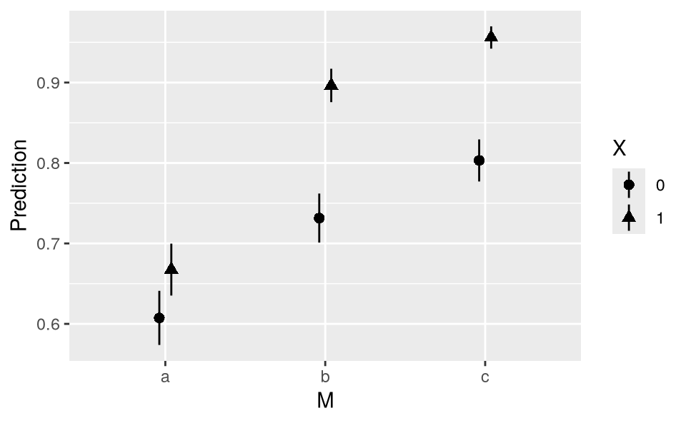
plot_predictions(mod, by=["M", "X"]).show()
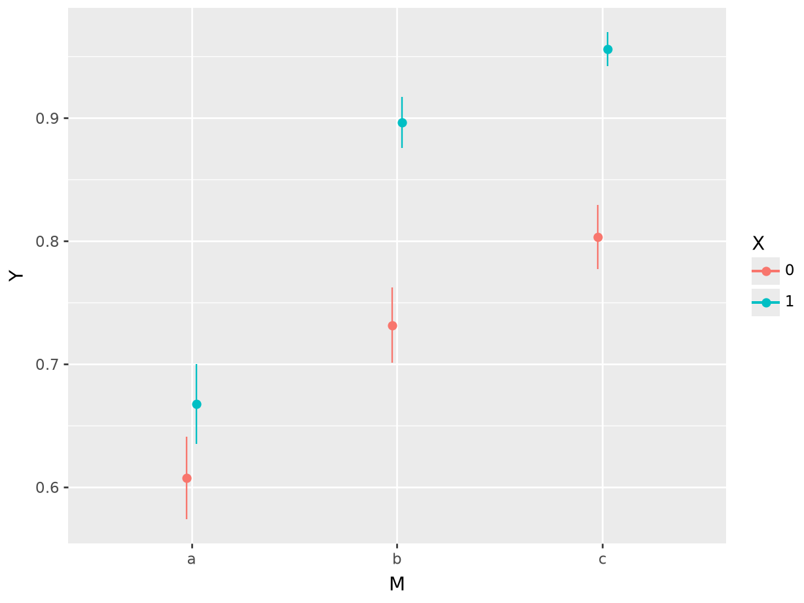
The triangles in this figure are systematically above the corresponding circles. On average, the predicted probability that \Y=1\ is considerably higher when \X=1\ than when \X=0\. Figure 10.1 also gives us a first hint that the relationship between \X\ and \Y\ may differ across values of \M\. For some values of \M\, the triangles are farther apart from the circles, suggesting that the effect of \X\ on \Y\ may be stronger when \M\ takes on those values.
Does \X\ affect \Y\?
We can build on these preliminary findings by adopting a more explicitly counterfactual approach, using the comparisons() family of function.5 Recall, from Chapter 6, that we can compute an average counterfactual comparison by taking three steps.
Modify the original dataset to fix \X=0\ for all observations, and compute predictions for every row.
Modify the original dataset to fix \X=1\ for all observations, and compute predictions for every row.
Calculate the average difference between the counterfactual predictions computed in steps 1 and 2.
This can be done with a single line of code.
avg_comparisons(mod, variables = "X")
|———-|————|——|————-|——-|——–|
avg_comparisons(mod, variables = "X")shape: (1, 7)
┌──────────┬───────────┬──────┬─────────┬─────┬───────┬───────┐
│ Estimate ┆ Std.Error ┆ z ┆ P(>|z|) ┆ S ┆ 2.5% ┆ 97.5% │
│ --- ┆ --- ┆ --- ┆ --- ┆ --- ┆ --- ┆ --- │
│ str ┆ str ┆ str ┆ str ┆ str ┆ str ┆ str │
╞══════════╪═══════════╪══════╪═════════╪═════╪═══════╪═══════╡
│ 0.127 ┆ 0.0112 ┆ 11.3 ┆ 0 ┆ inf ┆ 0.105 ┆ 0.149 │
└──────────┴───────────┴──────┴─────────┴─────┴───────┴───────┘
Term: X
Contrast: 1 - 0On average, moving from 0 to 1 on the \X\ variable is associated with an increase of 0.127 on the outcome scale. Since we fit a logistic regression model, predictions are expressed on the probability scale. Thus, the estimate printed above suggests that the average treatment effect of \X\ on \Y\ is about 12.7 percentage points.6 This estimate is statistically distinguishable from zero, as the small \p\ value and confidence interval attest.
Is the effect of \X\ on \Y\ moderated by \M\?
Now we can exploit the multiplicative interaction in our model to interrogate heterogeneity. To see if the effect of \X\ on \Y\ depends on \M\, we make the same function call as above, but add the by argument.
avg_comparisons(mod, variables = "X", by = "M")
|—–|———-|————|——-|————-|——–|——–|
avg_comparisons(mod, variables = "X", by = "M")shape: (3, 8)
┌──────┬──────────┬───────────┬──────┬─────────┬──────┬────────┬───────┐
│ M ┆ Estimate ┆ Std.Error ┆ z ┆ P(>|z|) ┆ S ┆ 2.5% ┆ 97.5% │
│ --- ┆ --- ┆ --- ┆ --- ┆ --- ┆ --- ┆ --- ┆ --- │
│ enum ┆ str ┆ str ┆ str ┆ str ┆ str ┆ str ┆ str │
╞══════╪══════════╪═══════════╪══════╪═════════╪══════╪════════╪═══════╡
│ a ┆ 0.0601 ┆ 0.0238 ┆ 2.53 ┆ 0.0116 ┆ 6.43 ┆ 0.0134 ┆ 0.107 │
│ b ┆ 0.165 ┆ 0.0188 ┆ 8.77 ┆ 0 ┆ inf ┆ 0.128 ┆ 0.202 │
│ c ┆ 0.153 ┆ 0.0151 ┆ 10.1 ┆ 0 ┆ inf ┆ 0.123 ┆ 0.182 │
└──────┴──────────┴───────────┴──────┴─────────┴──────┴────────┴───────┘
Term: X
Contrast: 1 - 0On average, moving from the control (\X=0\) to the treatment group (\X=1\) is associated with an increase of 6 percentage points for individuals in category \a\. The average estimated effect of \X\ for individuals in category \c\ is 15 percentage points.
At first glance, these two estimates look different. But is the difference between 6 and 15 percentage points statistically significant? Can we reject the null hypothesis that these two estimates are equal? To answer these questions, we can use the hypothesis argument.
avg_comparisons(mod,
variables = "X",
by = "M",
hypothesis = "b3 - b1 = 0")
|————|———-|————|——|————-|——–|——–|
avg_comparisons(mod,
variables = "X",
by = "M",
hypothesis = "b2 - b0 = 0")shape: (1, 7)
┌──────────┬───────────┬──────┬──────────┬──────┬────────┬───────┐
│ Estimate ┆ Std.Error ┆ z ┆ P(>|z|) ┆ S ┆ 2.5% ┆ 97.5% │
│ --- ┆ --- ┆ --- ┆ --- ┆ --- ┆ --- ┆ --- │
│ str ┆ str ┆ str ┆ str ┆ str ┆ str ┆ str │
╞══════════╪═══════════╪══════╪══════════╪══════╪════════╪═══════╡
│ 0.0928 ┆ 0.0282 ┆ 3.29 ┆ 0.000996 ┆ 9.97 ┆ 0.0376 ┆ 0.148 │
└──────────┴───────────┴──────┴──────────┴──────┴────────┴───────┘
Term: b2-b0=0The difference between the average estimated effect of \X\ in categories \c\ and \a\ is: \0.1529 - 0.0601 = 0.0928\. This difference is associated to a large \z\ statistic and a small \p\ value. Therefore, we can conclude that the difference is statistically significant; we can reject the null hypothesis that the effect of \X\ on \Y\ is the same in sub-populations \a\ and \c\.
10.1.2 Categorical-by-continuous
The second case to consider is an interaction between a categorical explanator (\X\) and a continuous mediator (\M\). To illustrate, we consider a new simulated dataset.
dat = get_dataset("interaction_02")
head(dat)
Y X M
1 1 0 -0.5214523
2 0 1 0.1356705
3 1 0 -0.4120862
4 0 0 -0.5665770
5 0 0 -0.9788323
6 1 1 -1.1342331
dat = get_dataset("interaction_02")
# Convert categorical columns to proper dtypes
for col in dat.columns:
if dat[col].dtype in [pl.Utf8, pl.String]:
dat = dat.with_columns(pl.col(col).cast(pl.Categorical))As before, we fit a logistic regression model with a multiplicative interaction, using the asterisk operator.
mod = glm(Y ~ X * M, data = dat, family = binomial)
summary(mod)
Coefficients:
Estimate Std. Error z value Pr(>|z|)
(Intercept) -0.83981 0.04644 -18.083 < 0.001
X 0.19222 0.06334 3.035 0.00241
M -0.75891 0.05049 -15.030 < 0.001
X:M 0.35209 0.06753 5.213 < 0.001
mod = logit("Y ~ X * M", data=dat.to_pandas()).fit()Optimization terminated successfully.
Current function value: 0.601138
Iterations 5
mod.summary()|——————|——————|——————-|———–|
Logit Regression Results {.simpletable .caption-top .table .table-sm .table-striped .small}
|———–|———|———|———|———-|———|———|
Conditional predictions
In the previous section, we started by computing average predictions for each combination of the interacted variable. When one of the variables is continuous and takes on many values (like \M\), it is not practical to report averages for every combination of \X\ and \M\. Therefore, we focus on “conditional” estimates, obtained by calling the predictions() function. We use the datagrid() and fivenum() functions to create a grid of predictors based on Tukey’s five number summary of \M\.7
predictions(mod, newdata = datagrid(X = c(0, 1), M = fivenum))
|—–|———-|———-|————-|——–|——–|
p = predictions(mod, newdata=datagrid(X = [0, 1], M = fivenum))The results show considerable variation in the predicted probability that \Y\ equals 1, ranging from 0.029 to 0.825.
Instead of making predictions for discrete values of the continuous moderator \M\, we can also draw a plot with that variable on the x-axis.
plot_predictions(mod, condition = c("M", "X"))
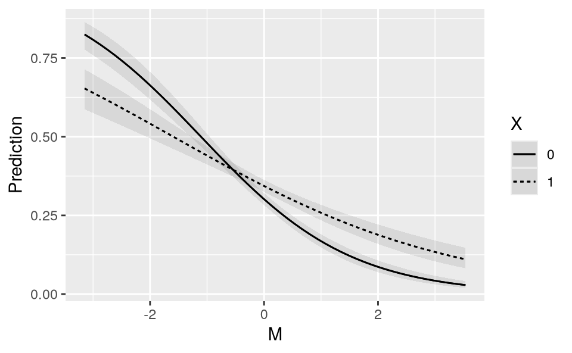
plot_predictions(mod, condition = ["M", "X"]).show()
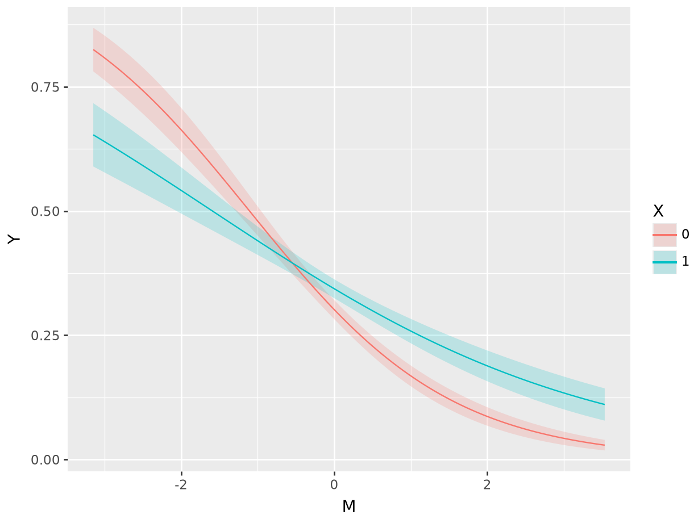
Figure 10.2 shows that predicted values of \Y\ tend to be lower when \M\ is large. That figure also suggests that the relationship between \X\ and \Y\ has a different character for different values of \M\. When \M\ is small (left side of the plot), we see
\\
When \M\ is large, the converse seems true.
Does \X\ affect \Y\?
Moving to the counterfactual analysis, we call avg_comparisons() to get an overall estimate of the effect of \X\ on the predicted \Pr(Y=1)\.
avg_comparisons(mod, variables = "X")
|———-|————|——|————-|———|——–|
avg_comparisons(mod, variables = "X")shape: (1, 7)
┌──────────┬───────────┬──────┬─────────┬──────┬─────────┬────────┐
│ Estimate ┆ Std.Error ┆ z ┆ P(>|z|) ┆ S ┆ 2.5% ┆ 97.5% │
│ --- ┆ --- ┆ --- ┆ --- ┆ --- ┆ --- ┆ --- │
│ str ┆ str ┆ str ┆ str ┆ str ┆ str ┆ str │
╞══════════╪═══════════╪══════╪═════════╪══════╪═════════╪════════╡
│ 0.0284 ┆ 0.0129 ┆ 2.21 ┆ 0.0274 ┆ 5.19 ┆ 0.00317 ┆ 0.0536 │
└──────────┴───────────┴──────┴─────────┴──────┴─────────┴────────┘
Term: X
Contrast: 1 - 0On average, moving from 0 to 1 on \X\ increases the predicted probability that \Y=1\ by 2.8 percentage points.
Is the effect of \X\ on \Y\ moderated by \M\?
As explained in Chapter 6, we can estimate the effect of \X\ for different values of \M\ by using the newdata argument and datagrid() function. Here, we measure the strength of association between \X\ and \Y\ for two different values of \M\: its minimum and maximum.
comparisons(mod, variables = "X", newdata = datagrid(M = range))
|——-|———-|————|——-|————-|———|———|
comparisons(mod, variables = "X", newdata=datagrid(M = minmax))shape: (2, 8)
┌───────┬──────────┬───────────┬───────┬──────────┬──────┬────────┬─────────┐
│ M ┆ Estimate ┆ Std.Error ┆ z ┆ P(>|z|) ┆ S ┆ 2.5% ┆ 97.5% │
│ --- ┆ --- ┆ --- ┆ --- ┆ --- ┆ --- ┆ --- ┆ --- │
│ str ┆ str ┆ str ┆ str ┆ str ┆ str ┆ str ┆ str │
╞═══════╪══════════╪═══════════╪═══════╪══════════╪══════╪════════╪═════════╡
│ -3.15 ┆ -0.172 ┆ 0.0395 ┆ -4.35 ┆ 1.39e-05 ┆ 16.1 ┆ -0.249 ┆ -0.0943 │
│ 3.53 ┆ 0.0818 ┆ 0.0174 ┆ 4.7 ┆ 2.69e-06 ┆ 18.5 ┆ 0.0477 ┆ 0.116 │
└───────┴──────────┴───────────┴───────┴──────────┴──────┴────────┴─────────┘
Term: X
Contrast: 1 - 0Moving from 0 to 1 on the \X\ variable is associated with a change of -0.172 in the predicted \Y\ when the moderator \M\ is at its minimum. Moving from 0 to 1 on the \X\ variable is associated with a change of 0.082 in the predicted \Y\ when the moderator \M\ is at its maximum. Both of these estimates are associated with small \p\ values, so we can reject the null hypotheses that they are equal to zero.
Both estimates are different from zero, but are they different from one another? Is the effect of \X\ on \Y\ different when \M\ takes on different values? To check this, we can add the hypothesis argument to the previous call.
comparisons(mod,
hypothesis = "b2 - b1 = 0",
variables = "X",
newdata = datagrid(M = range))
|————|———-|————|——|————-|——-|——–|
comparisons(mod, variables = "X",
newdata=datagrid(M = minmax),
hypothesis = "b1 - b0 = 0")shape: (1, 7)
┌──────────┬───────────┬──────┬──────────┬──────┬───────┬───────┐
│ Estimate ┆ Std.Error ┆ z ┆ P(>|z|) ┆ S ┆ 2.5% ┆ 97.5% │
│ --- ┆ --- ┆ --- ┆ --- ┆ --- ┆ --- ┆ --- │
│ str ┆ str ┆ str ┆ str ┆ str ┆ str ┆ str │
╞══════════╪═══════════╪══════╪══════════╪══════╪═══════╪═══════╡
│ 0.253 ┆ 0.0546 ┆ 4.64 ┆ 3.53e-06 ┆ 18.1 ┆ 0.146 ┆ 0.36 │
└──────────┴───────────┴──────┴──────────┴──────┴───────┴───────┘
Term: b1-b0=0This confirms that the estimates are statistically distinguishable. We can reject the null hypothesis that \M\ has no moderating effect on the relationship between \X\ and \Y\.
10.1.3 Continuous-by-continuous
The third case to consider is an interaction between two continuous numeric variables: \X\ and \M\. To illustrate, we fit a new model to simulated data.
dat = get_dataset("interaction_03")
head(dat)
Y X M
1 0 -0.7786629 -0.76095326
2 0 -0.3894764 -0.19851990
3 0 -2.0337983 1.45542070
4 1 -0.9823731 -0.02538247
5 1 0.2478901 -0.66367170
6 0 -2.1038646 -0.31371796
mod = glm(Y ~ X * M, data = dat, family = binomial)
summary(mod)
Coefficients:
Estimate Std. Error z value Pr(>|z|)
(Intercept) -0.95119 0.03320 -28.650 <0.001
X 0.44657 0.03470 12.868 <0.001
M 0.21494 0.03435 6.257 <0.001
X:M 0.50298 0.03660 13.744 <0.001
dat = get_dataset("interaction_03")
# Convert categorical columns to proper dtypes
for col in dat.columns:
if dat[col].dtype in [pl.Utf8, pl.String]:
dat = dat.with_columns(pl.col(col).cast(pl.Categorical))
mod = logit("Y ~ X * M", data=dat.to_pandas()).fit()Optimization terminated successfully.
Current function value: 0.558522
Iterations 6Conditional predictions
As in the previous cases, we begin by computing the predicted outcomes for different values of the predictors. In practice, the analyst should report predictions for predictor values that are meaningful to the domain of application. Here, we hold \X\ and \M\ to fixed arbitrary values:
p = predictions(mod, newdata = datagrid(
X = c(-2, 2),
M = c(-1, 0, 1)))
p
|—–|—–|———-|————-|——–|——–|
predictions(mod, newdata = datagrid(
X = [-2, 2],
M = [-1, 0, 1]))shape: (6, 9)
┌─────┬─────┬──────────┬───────────┬───┬─────────┬─────┬────────┬────────┐
│ X ┆ M ┆ Estimate ┆ Std.Error ┆ … ┆ P(>|z|) ┆ S ┆ 2.5% ┆ 97.5% │
│ --- ┆ --- ┆ --- ┆ --- ┆ ┆ --- ┆ --- ┆ --- ┆ --- │
│ str ┆ str ┆ str ┆ str ┆ ┆ str ┆ str ┆ str ┆ str │
╞═════╪═════╪══════════╪═══════════╪═══╪═════════╪═════╪════════╪════════╡
│ -2 ┆ -1 ┆ 0.259 ┆ 0.0199 ┆ … ┆ 0 ┆ inf ┆ 0.22 ┆ 0.298 │
│ -2 ┆ 0 ┆ 0.137 ┆ 0.00953 ┆ … ┆ 0 ┆ inf ┆ 0.118 ┆ 0.155 │
│ -2 ┆ 1 ┆ 0.0669 ┆ 0.00779 ┆ … ┆ 0 ┆ inf ┆ 0.0516 ┆ 0.0822 │
│ 2 ┆ -1 ┆ 0.218 ┆ 0.0185 ┆ … ┆ 0 ┆ inf ┆ 0.181 ┆ 0.254 │
│ 2 ┆ 0 ┆ 0.485 ┆ 0.0182 ┆ … ┆ 0 ┆ inf ┆ 0.45 ┆ 0.521 │
│ 2 ┆ 1 ┆ 0.762 ┆ 0.0196 ┆ … ┆ 0 ┆ inf ┆ 0.723 ┆ 0.8 │
└─────┴─────┴──────────┴───────────┴───┴─────────┴─────┴────────┴────────┘When \X=-2\ and \M=-1\, the predicted probability that \Y\ equals 1 is 25.86%.
Rather than focus on arbitrary values of \X\ and \M\, we can plot predicted values to communicate a richer set of estimates. When calling plot_predictions() with these data, we obtain a plot of predicted outcomes with the focal variable on the x-axis, and lines representing different values of the moderator.
plot_predictions(mod, condition = c("X", "M"))
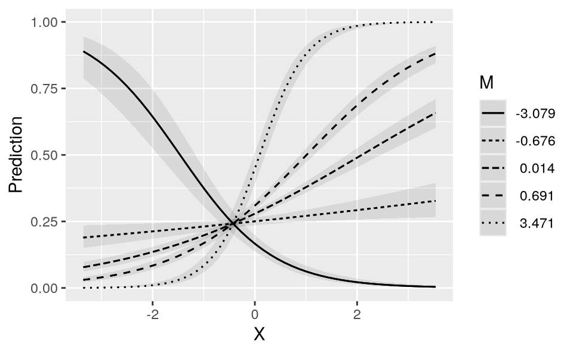
plot_predictions(mod, condition=["X", "M"]).show()
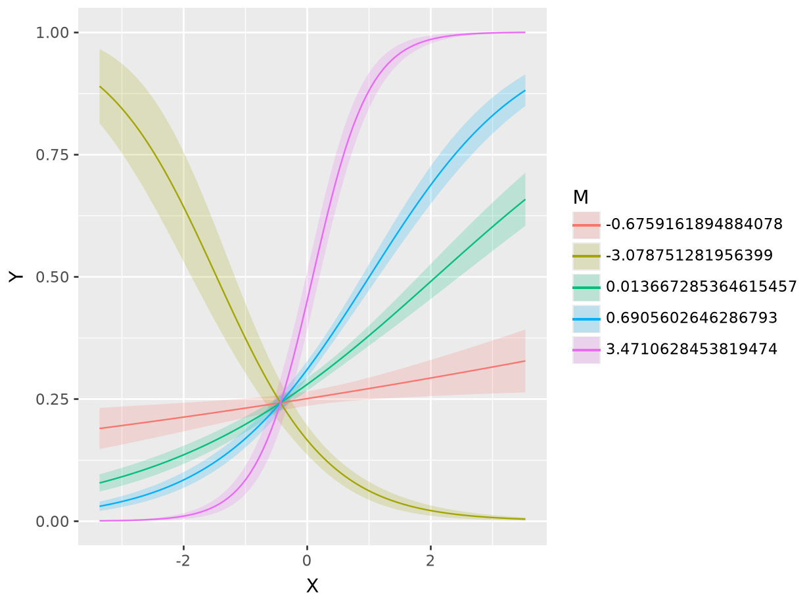
We can draw two preliminary conclusions from Figure 10.3. First, the predicted values of \Y\ depend strongly on the value of \X\. Moving from left to right in the plot often has a strong effect on the heights of predicted probability curves. Second, \M\ strongly moderates the relationship between \X\ and \Y\. Indeed, for some values of \M\ the relationship of interest completely flips. For example, when \M\ is around -3, the relationship between \X\ and \Y\ is negative: an increase in \X\ is associated with a decrease in \Pr(Y=1)\. However, for all other displayed values of \M\, the relationship between \X\ and \Y\ is positive: an increase in \X\ is associated with an increase in \Pr(Y=1)\.
Does \X\ affect \Y\?
To measure the association between \X\ on \Y\, we have two basic options. First, we can use the comparisons() function to compute the estimated effect of a discrete change in \X\ on the predicted value of \Y\. Second, we can use the slopes() function to compute the estimated slope of \Y\ with respect to \X\. Since the focal variable and mediator are both continuous, the rest of this section focuses on slopes. However, it is useful to note that slopes and counterfactual comparisons both offer valid answers to the research question, both families of functions operate in nearly identical ways, and both sets of results would lead us to the same substantive conclusions.
s = avg_slopes(mod, variables = "X")
s
|———-|————|—–|————-|——–|——–|
avg_slopes(mod, variables = "X")shape: (1, 7)
┌──────────┬───────────┬─────┬─────────┬─────┬────────┬────────┐
│ Estimate ┆ Std.Error ┆ z ┆ P(>|z|) ┆ S ┆ 2.5% ┆ 97.5% │
│ --- ┆ --- ┆ --- ┆ --- ┆ --- ┆ --- ┆ --- │
│ str ┆ str ┆ str ┆ str ┆ str ┆ str ┆ str │
╞══════════╪═══════════╪═════╪═════════╪═════╪════════╪════════╡
│ 0.0857 ┆ 0.00571 ┆ 15 ┆ 0 ┆ inf ┆ 0.0745 ┆ 0.0969 │
└──────────┴───────────┴─────┴─────────┴─────┴────────┴────────┘
Term: X
Contrast: dY/dXOn average, across all observed values of the moderator \M\, increasing \X\ by one unit increases the predicted outcome by 0.086.8 This is interesting but, as Figure 10.3 suggests, there is strong heterogeneity in the relationship of interest. The association between \X\ and \Y\ may be very different for different values of \M\.
Is the effect of \X\ on \Y\ moderated by \M\?
To answer this question, we estimate slopes of \Y\ with respect to \X\, for five values of the moderator \M\.
slopes(mod, variables = "X", newdata = datagrid(M = fivenum))
|———|———-|————|——-|————-|———-|———|
slopes(mod, variables = "X", newdata = datagrid(M = fivenum))shape: (5, 8)
┌────────┬──────────┬───────────┬───────┬──────────┬──────┬────────┬────────┐
│ M ┆ Estimate ┆ Std.Error ┆ z ┆ P(>|z|) ┆ S ┆ 2.5% ┆ 97.5% │
│ --- ┆ --- ┆ --- ┆ --- ┆ --- ┆ --- ┆ --- ┆ --- │
│ str ┆ str ┆ str ┆ str ┆ str ┆ str ┆ str ┆ str │
╞════════╪══════════╪═══════════╪═══════╪══════════╪══════╪════════╪════════╡
│ -3.08 ┆ -0.152 ┆ 0.019 ┆ -8.03 ┆ 1.11e-15 ┆ 49.7 ┆ -0.19 ┆ -0.115 │
│ -0.676 ┆ 0.02 ┆ 0.00756 ┆ 2.65 ┆ 0.00812 ┆ 6.95 ┆ 0.0052 ┆ 0.0349 │
│ 0.0137 ┆ 0.0913 ┆ 0.00695 ┆ 13.1 ┆ 0 ┆ inf ┆ 0.0777 ┆ 0.105 │
│ 0.69 ┆ 0.17 ┆ 0.0095 ┆ 17.9 ┆ 0 ┆ inf ┆ 0.151 ┆ 0.188 │
│ 3.47 ┆ 0.543 ┆ 0.0336 ┆ 16.1 ┆ 0 ┆ inf ┆ 0.477 ┆ 0.609 │
└────────┴──────────┴───────────┴───────┴──────────┴──────┴────────┴────────┘
Term: X
Contrast: dY/dXThe results in this table confirm our intuition. When \M\, the slope is negative: increasing \X\ results in a reduction of \Y\. However, for the other values of \M\, the average slope is positive. This is consistent with Figure 10.3, which shows one line with downward slope, and four lines with upward slopes.
For a more fine-grained analysis, we can plot the slope of \Y\ with respect to \X\ for all observed values of the moderator \M\.
plot_slopes(mod, variables = "X", condition = "M") +
geom_hline(yintercept = 0, linetype = "dotted")
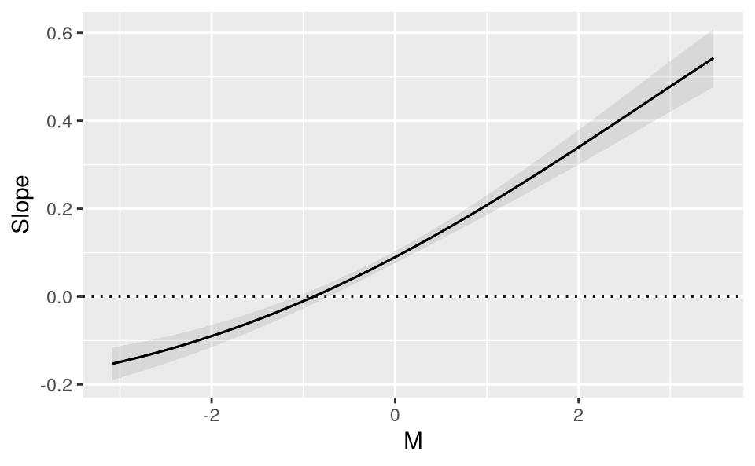
plot_slopes(mod, variables = "X", condition = "M").show()
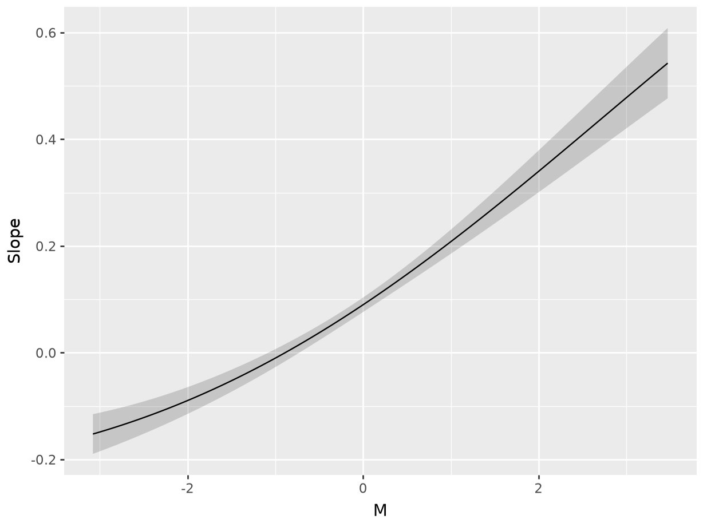
Figure 10.4 shows that when the moderator \M\ is below -1, the relationship between \X\ and \Y\ is negative: increasing \X\ decreases \Y\. However, when \M\ rises above -1, the relationship between \X\ and \Y\ becomes positive: increasing \X\ increases \Y\.
We can confirm that this moderation effect is statistically significant using the hypothesis argument. First, we estimate the slope of \Y\ with respect to \X\ for two different values of the moderator \M\: its minimum and maximum.
slopes(mod,
variables = "X",
newdata = datagrid(M = range))
|——-|———-|————|——-|————-|——–|——–|
slopes(mod, variables = "X", newdata=datagrid(M = minmax))shape: (2, 8)
┌───────┬──────────┬───────────┬───────┬──────────┬──────┬───────┬────────┐
│ M ┆ Estimate ┆ Std.Error ┆ z ┆ P(>|z|) ┆ S ┆ 2.5% ┆ 97.5% │
│ --- ┆ --- ┆ --- ┆ --- ┆ --- ┆ --- ┆ --- ┆ --- │
│ str ┆ str ┆ str ┆ str ┆ str ┆ str ┆ str ┆ str │
╞═══════╪══════════╪═══════════╪═══════╪══════════╪══════╪═══════╪════════╡
│ -3.08 ┆ -0.152 ┆ 0.019 ┆ -8.03 ┆ 1.11e-15 ┆ 49.7 ┆ -0.19 ┆ -0.115 │
│ 3.47 ┆ 0.543 ┆ 0.0336 ┆ 16.1 ┆ 0 ┆ inf ┆ 0.477 ┆ 0.609 │
└───────┴──────────┴───────────┴───────┴──────────┴──────┴───────┴────────┘
Term: X
Contrast: dY/dXThen, we use the hypothesis argument to compare the two estimates.
slopes(mod,
variables = "X",
newdata = datagrid(M = range),
hypothesis = "b2 - b1 = 0")
|————|———-|————|——|————-|——-|——–|
slopes(mod, variables = "X", newdata=datagrid(M = minmax),
hypothesis = "b1 - b0 = 0")shape: (1, 7)
┌──────────┬───────────┬──────┬─────────┬─────┬───────┬───────┐
│ Estimate ┆ Std.Error ┆ z ┆ P(>|z|) ┆ S ┆ 2.5% ┆ 97.5% │
│ --- ┆ --- ┆ --- ┆ --- ┆ --- ┆ --- ┆ --- │
│ str ┆ str ┆ str ┆ str ┆ str ┆ str ┆ str │
╞══════════╪═══════════╪══════╪═════════╪═════╪═══════╪═══════╡
│ 0.695 ┆ 0.0475 ┆ 14.6 ┆ 0 ┆ inf ┆ 0.602 ┆ 0.788 │
└──────────┴───────────┴──────┴─────────┴─────┴───────┴───────┘
Term: b1-b0=0The \\ slope is larger when evaluated at maximum \M\, than at minimum \M\. Therefore, we can reject the null hypothesis that \M\ has no moderating effect on the relationship between \X\ and \Y\.
10.1.4 Multiple interactions
The fourth case to consider is when more than two variables are included in multiplicative interactions. Such models have serious downsides: they can overfit the data, and they impose major costs in terms of statistical power, typically requiring considerably larger sample sizes than models without interaction. On the upside, models with multiple interactions allow more flexibility in modeling, and they can capture complex patterns of moderation between regressors.
Models with several multiplicative interactions do not pose any particular interpretation challenge, since the tools and workflows introduced in this book can be applied to these models in straightforward fashion. Consider this simulated dataset with four binary variables.
dat = get_dataset("interaction_04")
head(dat)
Y X M1 M2
1 0 0 0 0
2 1 1 0 1
3 0 0 1 0
4 1 0 1 0
5 0 0 0 1
6 0 1 0 1
dat = get_dataset("interaction_04")
# Convert categorical columns to proper dtypes
for col in dat.columns:
if dat[col].dtype in [pl.Utf8, pl.String]:
dat = dat.with_columns(pl.col(col).cast(pl.Categorical))We fit a logistic regression model with \Y\ as the outcome, and multiplicative interactions between all three predictors.
mod = glm(Y ~ X * M1 * M2, data = dat, family = binomial)
summary(mod)
Coefficients:
Estimate Std. Error z value Pr(>|z|)
(Intercept) -1.0209 0.0908 -11.244 <0.001
X 0.4632 0.1229 3.768 <0.001
M1 -0.7954 0.1470 -5.411 <0.001
M2 0.5788 0.1217 4.755 <0.001
X:M1 0.6746 0.1890 3.569 <0.001
X:M2 -0.9649 0.1716 -5.623 <0.001
M1:M2 0.4046 0.1890 2.141 0.0323
X:M1:M2 0.1976 0.2542 0.777 0.4369
mod = logit("Y ~ X * M1 * M2", data = dat.to_pandas()).fit()Optimization terminated successfully.
Current function value: 0.602519
Iterations 6
mod.summary()|——————|——————|——————-|———–|
Logit Regression Results {.simpletable .caption-top .table .table-sm .table-striped .small}
|———–|———|———|———|———-|———|———|
Once again, the coefficient estimates of this logistic regression are difficult to interpret on their own, so we use functions from the marginaleffects package.
Marginal predictions
As before, we can compute and display marginal predicted outcomes in any subgroup of interest, using the avg_predictions() or plot_predictions() functions.
plot_predictions(mod, by = c("X", "M1", "M2"))
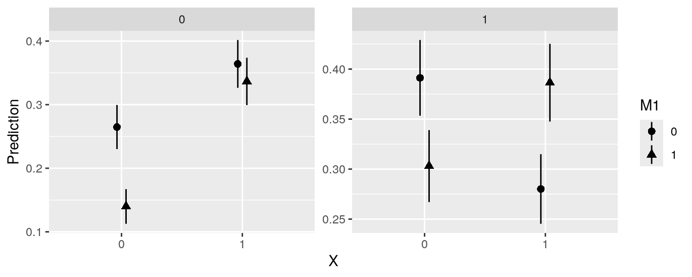
plot_predictions(mod, by = ["X", "M1", "M2"]).show()
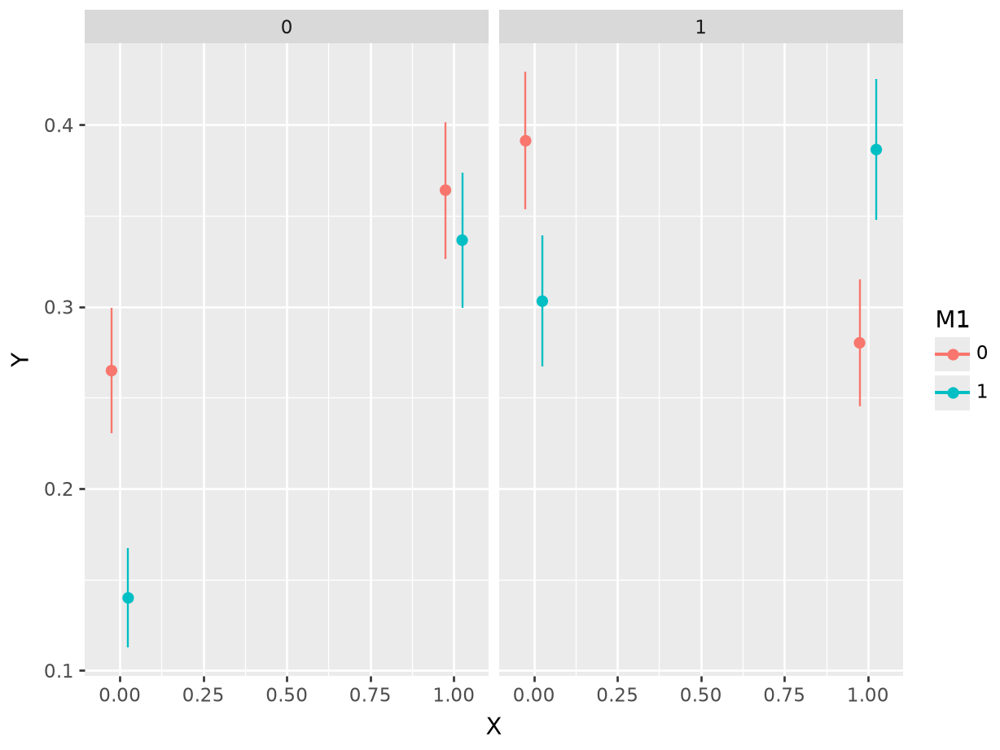
Figure 10.5 shows the predicted probability that \Y\ equals 1, for different combinations of \X\, \M_1\, and \M_2\. The x-axis represents the value of \X\. The shape of points represents the value of \M_1\, with triangles indicating a value of \M_1=1\. The left facet shows average predictions where \M_2=0\, and the right facet shows estimates for the subset of data where \M_2=1\.
In the left facet, we see that the average predicted probability that \Y\ equals 1 is equal to about 26.5% when \X=0\, \M_1=0\, and \M_2=0\. We can extract this numeric result by calling avg_predictions() on the relevant subset of data.
avg_predictions(mod, newdata = datagrid(
X = 0, M1 = 0, M2 = 0
))
|———-|————|—–|————-|——-|——–|
avg_predictions(mod, newdata = datagrid(X = 0, M1 = 0, M2 = 0))shape: (1, 7)
┌──────────┬───────────┬─────┬─────────┬─────┬──────┬───────┐
│ Estimate ┆ Std.Error ┆ z ┆ P(>|z|) ┆ S ┆ 2.5% ┆ 97.5% │
│ --- ┆ --- ┆ --- ┆ --- ┆ --- ┆ --- ┆ --- │
│ str ┆ str ┆ str ┆ str ┆ str ┆ str ┆ str │
╞══════════╪═══════════╪═════╪═════════╪═════╪══════╪═══════╡
│ 0.265 ┆ 0.0177 ┆ 15 ┆ 0 ┆ inf ┆ 0.23 ┆ 0.3 │
└──────────┴───────────┴─────┴─────────┴─────┴──────┴───────┘Similarly, we can use the by argument to compute average predicted probabilities for every combination of the predictors (results omitted for brevity).
avg_predictions(mod, by = c("X", "M1", "M2"))
Does \X\ affect \Y\?
As before, we can estimate the average change in \Y\ associated with a change from 0 to 1 in the \X\ variable using the avg_comparisons() function.
avg_comparisons(mod, variables = "X")
|———-|————|—–|————-|——–|——–|
avg_comparisons(mod, variables = "X")shape: (1, 7)
┌──────────┬───────────┬─────┬──────────┬──────┬────────┬───────┐
│ Estimate ┆ Std.Error ┆ z ┆ P(>|z|) ┆ S ┆ 2.5% ┆ 97.5% │
│ --- ┆ --- ┆ --- ┆ --- ┆ --- ┆ --- ┆ --- │
│ str ┆ str ┆ str ┆ str ┆ str ┆ str ┆ str │
╞══════════╪═══════════╪═════╪══════════╪══════╪════════╪═══════╡
│ 0.0657 ┆ 0.0129 ┆ 5.1 ┆ 3.47e-07 ┆ 21.5 ┆ 0.0405 ┆ 0.091 │
└──────────┴───────────┴─────┴──────────┴──────┴────────┴───────┘
Term: X
Contrast: 1 - 0This suggests that, on average, moving from the control (0) to the treatment (1) group is associated with an increase of 6.6 percentage points in the probability that \Y\ equals 1. The \p\ value is small, which implies that we can reject the null hypothesis that \X\ has no effect on the predicted outcome.
Is the effect of \X\ on \Y\ moderated by \M_1\?
To check estimate if the effect of \X\ varies depending on the value of moderator \M_1\, we call avg_comparisons() with the by argument.
avg_comparisons(mod, variables = "X", by = "M1")
|—–|———-|————|——-|————-|———|——–|
avg_comparisons(mod, variables = "X", by = "M1")shape: (2, 8)
┌─────┬──────────┬───────────┬───────┬──────────┬───────┬─────────┬────────┐
│ M1 ┆ Estimate ┆ Std.Error ┆ z ┆ P(>|z|) ┆ S ┆ 2.5% ┆ 97.5% │
│ --- ┆ --- ┆ --- ┆ --- ┆ --- ┆ --- ┆ --- ┆ --- │
│ str ┆ str ┆ str ┆ str ┆ str ┆ str ┆ str ┆ str │
╞═════╪══════════╪═══════════╪═══════╪══════════╪═══════╪═════════╪════════╡
│ 0 ┆ -0.00703 ┆ 0.0185 ┆ -0.38 ┆ 0.704 ┆ 0.506 ┆ -0.0433 ┆ 0.0292 │
│ 1 ┆ 0.14 ┆ 0.0179 ┆ 7.83 ┆ 5.77e-15 ┆ 47.3 ┆ 0.105 ┆ 0.175 │
└─────┴──────────┴───────────┴───────┴──────────┴───────┴─────────┴────────┘
Term: X
Contrast: 1 - 0This shows that the expected change in \Y\ associated with a change in \X\ differs based on the value of \M_1\: -0.0070 vs. 0.1403. Using the hypothesis argument, we can confirm that the difference between these two estimated effect sizes is statistically significant. In other words, we can reject the null hypothesis that the effect of \X\ is the same for all values of \M_1\.
avg_comparisons(mod,
variables = "X",
by = "M1",
hypothesis = "b2 - b1 = 0")
|————|———-|————|——|————-|——–|——–|
avg_comparisons(mod, variables = "X", by = "M1",
hypothesis = "b1 - b0 = 0")shape: (1, 7)
┌──────────┬───────────┬──────┬──────────┬──────┬────────┬───────┐
│ Estimate ┆ Std.Error ┆ z ┆ P(>|z|) ┆ S ┆ 2.5% ┆ 97.5% │
│ --- ┆ --- ┆ --- ┆ --- ┆ --- ┆ --- ┆ --- │
│ str ┆ str ┆ str ┆ str ┆ str ┆ str ┆ str │
╞══════════╪═══════════╪══════╪══════════╪══════╪════════╪═══════╡
│ 0.147 ┆ 0.0258 ┆ 5.72 ┆ 1.13e-08 ┆ 26.4 ┆ 0.0968 ┆ 0.198 │
└──────────┴───────────┴──────┴──────────┴──────┴────────┴───────┘
Term: b1-b0=0Does the moderating effect of \M_1\ depend on \M_2\?
The last question that we pose is more complex. Above, we established two patterns.
On average, the value of \X\ affects the predicted value of \Y\.
On average, the value of \M_1\ modifies the strength of association between \X\ and \Y\.
Now, we ask if \M_2\ changes the way in which \M_1\ moderates the effect of \X\ on \Y\. The difference is subtle but important: we are asking if the moderation effect of \M_1\ is itself moderated by \M_2\.
The following code computes the average difference in predicted \Y\ associated with a change in \X\, for every combination of moderators \M_1\ and \M_2\. Each row represents the average effect of \X\ at different points in the sample space.
avg_comparisons(mod,
variables = "X",
by = c("M2", "M1"))
|—–|—–|———-|————|——-|————-|———|———|
avg_comparisons(mod,
variables = "X", by = ["M2", "M1"])shape: (4, 9)
┌─────┬─────┬──────────┬───────────┬───┬──────────┬──────┬────────┬─────────┐
│ M2 ┆ M1 ┆ Estimate ┆ Std.Error ┆ … ┆ P(>|z|) ┆ S ┆ 2.5% ┆ 97.5% │
│ --- ┆ --- ┆ --- ┆ --- ┆ ┆ --- ┆ --- ┆ --- ┆ --- │
│ str ┆ str ┆ str ┆ str ┆ ┆ str ┆ str ┆ str ┆ str │
╞═════╪═════╪══════════╪═══════════╪═══╪══════════╪══════╪════════╪═════════╡
│ 0 ┆ 0 ┆ 0.0992 ┆ 0.0261 ┆ … ┆ 0.000144 ┆ 12.8 ┆ 0.0481 ┆ 0.15 │
│ 0 ┆ 1 ┆ 0.197 ┆ 0.0236 ┆ … ┆ 0 ┆ inf ┆ 0.151 ┆ 0.243 │
│ 1 ┆ 0 ┆ -0.111 ┆ 0.0262 ┆ … ┆ 2.33e-05 ┆ 15.4 ┆ -0.163 ┆ -0.0597 │
│ 1 ┆ 1 ┆ 0.0834 ┆ 0.027 ┆ … ┆ 0.00204 ┆ 8.94 ┆ 0.0304 ┆ 0.136 │
└─────┴─────┴──────────┴───────────┴───┴──────────┴──────┴────────┴─────────┘
Term: X
Contrast: 1 - 0When we hold the moderators fixed at \M_1=0\ and \M_2=0\, changing the value of \X\ from 0 to 1 changes the average predicted probability of \Y=1\ by 9.9 percentage points. When we hold the moderators fixed at \M_1=0\ and \M_2=1\, changing the value of \X\ from 0 to 1 changes the average predicted probability of \Y=1\ by -11.1 percentage points.
Now, imagine we hold \M_2\ constant at 0. We can determine if the effect of \X\ is moderated by \M_1\ by using the hypothesis argument to compare estimates in rows 1 and 2. This shows that the estimated effect size of \X\ is larger when \M_1=1\ than when \M_1=0\, holding \M_2=0\.
avg_comparisons(mod,
hypothesis = "b2 - b1 = 0",
variables = "X",
by = c("M2", "M1"))
|————|———-|————|——|————-|——–|——–|
avg_comparisons(mod,
hypothesis = "b1 - b0 = 0",
variables = "X", by = ["M2", "M1"])shape: (1, 7)
┌──────────┬───────────┬──────┬─────────┬──────┬────────┬───────┐
│ Estimate ┆ Std.Error ┆ z ┆ P(>|z|) ┆ S ┆ 2.5% ┆ 97.5% │
│ --- ┆ --- ┆ --- ┆ --- ┆ --- ┆ --- ┆ --- │
│ str ┆ str ┆ str ┆ str ┆ str ┆ str ┆ str │
╞══════════╪═══════════╪══════╪═════════╪══════╪════════╪═══════╡
│ 0.0975 ┆ 0.0351 ┆ 2.77 ┆ 0.00557 ┆ 7.49 ┆ 0.0286 ┆ 0.166 │
└──────────┴───────────┴──────┴─────────┴──────┴────────┴───────┘
Term: b1-b0=0Similarly, imagine that we hold \M_2\ constant at 1. We can determine if the effect of \X\ is moderated by \M_1\ by comparing estimates in rows 3 and 4. We use the syntax introduced in Chapter 4, where b3 represents the 3rd estimate and b4 the fourth.
avg_comparisons(mod,
hypothesis = "b4 - b3 = 0",
variables = "X",
by = c("M2", "M1"))
|————|———-|————|——|————-|——-|——–|
avg_comparisons(mod,
hypothesis = "b3 - b2 = 0",
variables = "X", by = ["M2", "M1"])shape: (1, 7)
┌──────────┬───────────┬──────┬──────────┬──────┬───────┬───────┐
│ Estimate ┆ Std.Error ┆ z ┆ P(>|z|) ┆ S ┆ 2.5% ┆ 97.5% │
│ --- ┆ --- ┆ --- ┆ --- ┆ --- ┆ --- ┆ --- │
│ str ┆ str ┆ str ┆ str ┆ str ┆ str ┆ str │
╞══════════╪═══════════╪══════╪══════════╪══════╪═══════╪═══════╡
│ 0.194 ┆ 0.0377 ┆ 5.16 ┆ 2.51e-07 ┆ 21.9 ┆ 0.121 ┆ 0.268 │
└──────────┴───────────┴──────┴──────────┴──────┴───────┴───────┘
Term: b3-b2=0The hypothesis test above shows that we can reject the null hypothesis that the 4th estimate is equal to the 3rd (i.e., that the difference between them is zero). Therefore, we can conclude that the effect size of \X\ is larger when \M_1=1\ than when \M_1=0\, holding \M_2\ at 1.
So far, we have assessed the extent to which \M_1\ acts as a moderator, holding \M_2\ at different values. To answer the question of whether \M_2\ moderates the moderation effect of \M_1\, we can specify the hypothesis as a difference in differences:
avg_comparisons(mod,
hypothesis = "(b2 - b1) - (b4 - b3) = 0",
variables = "X",
by = c("M2", "M1"))
|——————-|———-|————|——-|————-|——–|———|
avg_comparisons(mod,
hypothesis = "(b1 - b0) - (b3 - b2) = 0",
variables = "X", by = ["M2", "M1"])shape: (1, 7)
┌──────────┬───────────┬───────┬─────────┬──────┬────────┬─────────┐
│ Estimate ┆ Std.Error ┆ z ┆ P(>|z|) ┆ S ┆ 2.5% ┆ 97.5% │
│ --- ┆ --- ┆ --- ┆ --- ┆ --- ┆ --- ┆ --- │
│ str ┆ str ┆ str ┆ str ┆ str ┆ str ┆ str │
╞══════════╪═══════════╪═══════╪═════════╪══════╪════════╪═════════╡
│ -0.097 ┆ 0.0515 ┆ -1.88 ┆ 0.0597 ┆ 4.07 ┆ -0.198 ┆ 0.00398 │
└──────────┴───────────┴───────┴─────────┴──────┴────────┴─────────┘
Term: (b1-b0)-(b3-b2)=0This suggests that \M_2\ may have a second-order moderation effect, but we cannot completely rule out the null hypothesis because the \p\ value does not cross conventional thresholds of statistical significance (\p\=0.0597). In other words, we cannot quite reject the null hypothesis that \M_2\ has no moderation effect on the moderation effect of \M_1\.
10.2 Polynomial regression
Polynomial regression is an extension of the standard additive regression framework, that can be used to model the relationship between a dependent variable \Y\ and an independent variable \X\ as an nth-degree polynomial. While the model specification remains linear in the coefficients, it is polynomial in the value of \X\. This type of regression is useful when the data shows a non-linear relationship that a straight line cannot adequately capture.
The general form of a polynomial regression model is
\Y = _0 + _1 X + _2 X^2 + _3 X^3 + + _n X^n + ,\
where \Y\ is the dependent variable, \X\ is the independent variable, \_0, _1, _2, , _n\ are the coefficients to be estimated, \n\ is the degree of the polynomial, and \\ represents the error term. For instance, a second-degree (quadratic) polynomial regression equation can be written as:
\Y = _0 + _1 X + _2 X^2 + \
A polynomial regression can be seen as a special case of the multiplicative interactions discussed in Section 10.1, where predictors are simply interacted with themselves. As before, they can be treated as a simple linear regression problem by constructing new variables \Z_1=X\, \Z_2=X^2\, etc. The model then becomes \Y=_0+_1Z_1+_2Z_2+\, which can be estimated using standard methods like ordinary least squares.
Polynomial regression offers several key advantages. It is flexible and can fit a wide range of curves, simply by adjusting the degree of the polynomial. As a result, polynomial regression can reveal underlying patterns in the data that are not immediately apparent with simpler models.
This approach also has notable disadvantages. One significant issue is its potential for overfitting, especially when the degree is high. Moreover, polynomial regression can suffer from unreliable extrapolation, where predictions made outside the range of the observed sample can become erratic and unrealistic. Consequently, while polynomial regression can be powerful, careful consideration must be given to the degree of the polynomial to balance fit and generalization effectively.
Polynomial regression can be viewed simply as a model specification with several variables interacted with themselves. As such, it can be interpreted using exactly the same tools discussed in the earlier part of this chapter. To illustrate, we consider two simple data generating processes adapted from Hainmueller et al. (2019). The first is
\\
If we fit a linear model with only \X\ as predictor, the line of best fit will not be a good representation of these data. However, a cubic polynomial regression can easily detect the curvilinear relationship between \X\ and \Y\. In R and Python, we can use similar syntax to specify polynomials directly in the model formula.9 Then, we call plot_predictions() to visualize the predictions of the model.
library(patchwork)
dat = get_dataset("polynomial_01")
mod_linear = lm(Y ~ X, data = dat)
p1 = plot_predictions(mod_linear, condition = "X", points = .05) +
ggtitle("Linear")
mod_cubic = lm(Y ~ X + I(X^2) + I(X^3), data = dat)
p2 = plot_predictions(mod_cubic, condition = "X", points = .05) +
ggtitle("Cubic")
p1 + p2
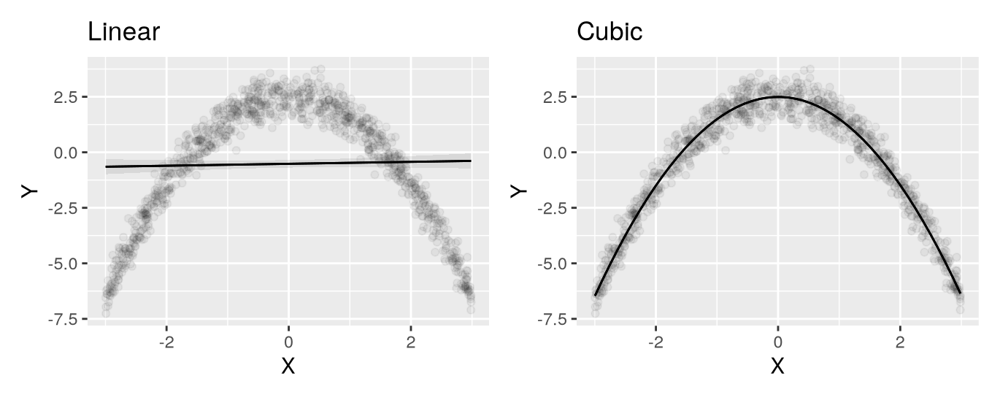
dat = get_dataset("polynomial_01")
# Convert categorical columns to proper dtypes
for col in dat.columns:
if dat[col].dtype in [pl.Utf8, pl.String]:
dat = dat.with_columns(pl.col(col).cast(pl.Categorical))
mod_linear = ols("Y ~ X", data = dat.to_pandas()).fit()
plot_predictions(mod_linear, condition="X", points=0.05).show()
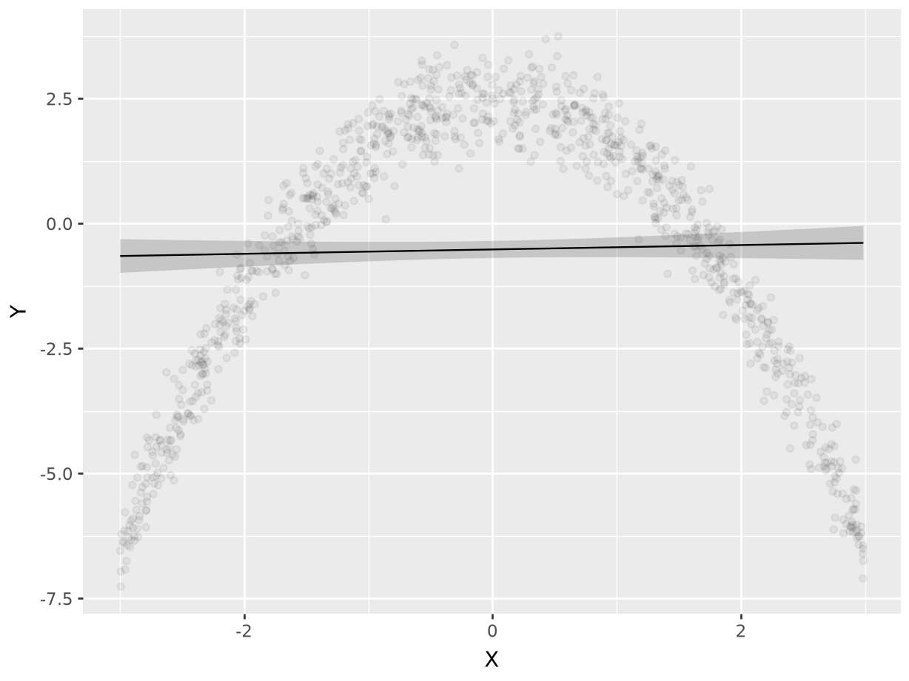
mod_cubic = ols("Y ~ X + I(X**2) + I(X**3)", data = dat.to_pandas()).fit()
plot_predictions(mod_cubic, condition="X", points=0.05).show()
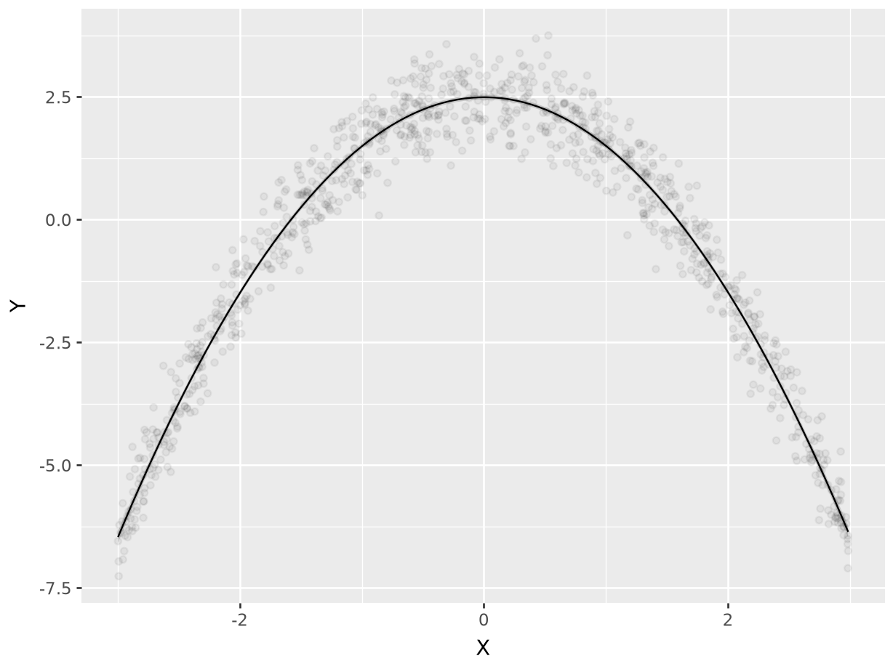
On the left-hand side, we see the predictions of a linear model. The prediction line runs straight through the cloud of observed data points, and fails to capture the curvilinear relationship between \X\ and \Y\. On the right-hand side, the prediction line drawn based on cubic terms does a very good job of capturing the curve in the data generating process.
To evaluate the strength of association between \X\ and \Y\, we can compute the slope of the outcome equation with respect to \X\, at different values of \X\.
slopes(mod_cubic, variables = "X", newdata = datagrid(X = c(-2, 0, 2)))
|—–|———-|————|———-|————-|———|———|
slopes(mod_cubic, variables="X", newdata=datagrid(X=[-2, 0, 2]))shape: (3, 8)
┌─────┬──────────┬───────────┬───────┬─────────┬───────┬─────────┬────────┐
│ X ┆ Estimate ┆ Std.Error ┆ z ┆ P(>|z|) ┆ S ┆ 2.5% ┆ 97.5% │
│ --- ┆ --- ┆ --- ┆ --- ┆ --- ┆ --- ┆ --- ┆ --- │
│ str ┆ str ┆ str ┆ str ┆ str ┆ str ┆ str ┆ str │
╞═════╪══════════╪═══════════╪═══════╪═════════╪═══════╪═════════╪════════╡
│ -2 ┆ 3.99 ┆ 0.0353 ┆ 113 ┆ 0 ┆ inf ┆ 3.92 ┆ 4.06 │
│ 0 ┆ 0.00478 ┆ 0.0222 ┆ 0.215 ┆ 0.83 ┆ 0.269 ┆ -0.0388 ┆ 0.0484 │
│ 2 ┆ -3.98 ┆ 0.0361 ┆ -110 ┆ 0 ┆ inf ┆ -4.05 ┆ -3.91 │
└─────┴──────────┴───────────┴───────┴─────────┴───────┴─────────┴────────┘
Term: X
Contrast: dY/dXWhen \X\ is negative, the slope is positive which indicates that an increase of \X\ is associated with an increase in \Y\. When \X\ is around 0, the slope is null, which indicates that the strength of association between \X\ and \Y\ is null (or very weak). When \X\ is around 0, changing \X\ by a small amount will have almost no effect on \Y\. When \X\ is positive, the slope is negative. This indicates that increasing \X\ should result in a decrease in \Y\.
Now, consider a slightly different data generating process, where a binary moderator \M\ changes the nature of the relationship between \X\ and \Y\.
\\
If we simply fit a cubic regression, without accounting for \M\, our predictions will be inaccurate. However, if we interact the moderator \M\ with all polynomial terms (using parentheses as a shortcut for the distributive property), we can get an excellent fit for the curvilinear and differentiated relationship between \X\ and \Y\.
dat = get_dataset("polynomial_02")
mod_cubic = lm(Y ~ X + I(X^2) + I(X^3), data = dat)
p1 = plot_predictions(mod_cubic, condition = "X",
points = .05)
mod_cubic_interaction = lm(Y ~ M * (X + I(X^2) + I(X^3)), data = dat)
p2 = plot_predictions(mod_cubic_interaction, condition = c("X", "M"),
points = .1)
p1 + p2
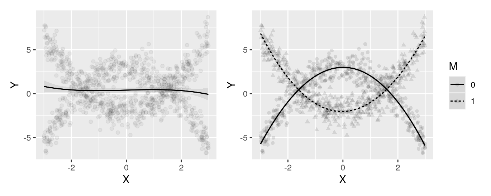
dat = get_dataset("polynomial_02")
# Convert categorical columns to proper dtypes
for col in dat.columns:
if dat[col].dtype in [pl.Utf8, pl.String]:
dat = dat.with_columns(pl.col(col).cast(pl.Categorical))
mod_cubic = ols("Y ~ X + I(X**2) + I(X**3)", data = dat.to_pandas()).fit()
plot_predictions(mod_cubic, condition="X", points = 0.1).show()
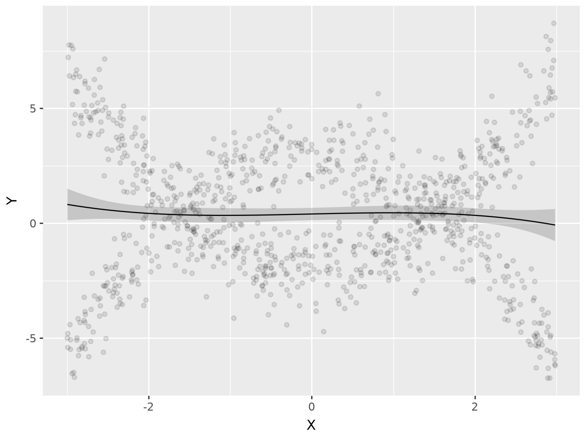
mod_cubic_interaction = ols("Y ~ M * (X + I(X**2) + I(X**3))",
data=dat.to_pandas()).fit()
plot_predictions(mod_cubic_interaction,
condition=["X", "M"]).show()
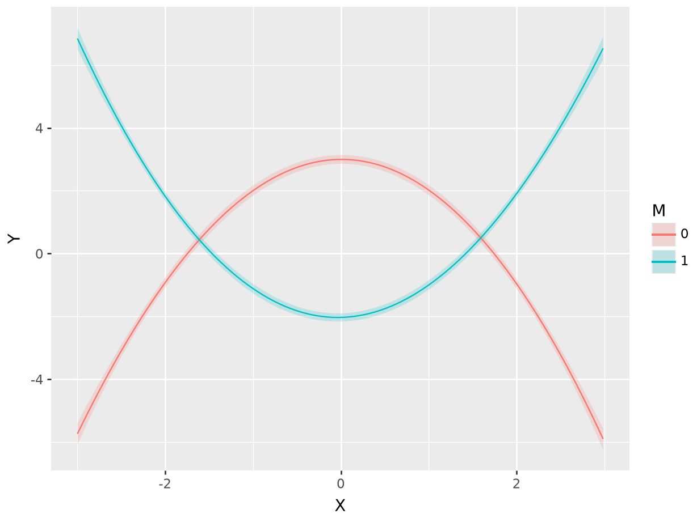
As expected, the fit lines drawn by the model with cubic polynomials and an interaction do well in capturing the distinct patterns, in the two \M\ subsets. And as before, we can estimate the slope of the outcome equation for different values of \M\ and \X\:
s = slopes(mod_cubic_interaction,
variables = "X",
newdata = datagrid(M = c(0, 1), X = fivenum))
s
|—–|———|———-|————|———|————-|———-|———|
slopes(mod_cubic_interaction, variables="X",
newdata=datagrid(M=[0, 1], X=fivenum))shape: (10, 9)
┌─────┬─────────┬──────────┬───────────┬───┬─────────┬──────┬────────┬────────┐
│ M ┆ X ┆ Estimate ┆ Std.Error ┆ … ┆ P(>|z|) ┆ S ┆ 2.5% ┆ 97.5% │
│ --- ┆ --- ┆ --- ┆ --- ┆ ┆ --- ┆ --- ┆ --- ┆ --- │
│ str ┆ str ┆ str ┆ str ┆ ┆ str ┆ str ┆ str ┆ str │
╞═════╪═════════╪══════════╪═══════════╪═══╪═════════╪══════╪════════╪════════╡
│ 0 ┆ -3 ┆ 5.75 ┆ 0.259 ┆ … ┆ 0 ┆ inf ┆ 5.25 ┆ 6.26 │
│ 0 ┆ -1.48 ┆ 2.9 ┆ 0.0581 ┆ … ┆ 0 ┆ inf ┆ 2.78 ┆ 3.01 │
│ 0 ┆ -0.0586 ┆ 0.132 ┆ 0.0662 ┆ … ┆ 0.0456 ┆ 4.46 ┆ 0.0026 ┆ 0.262 │
│ 0 ┆ 1.48 ┆ -2.94 ┆ 0.0575 ┆ … ┆ 0 ┆ inf ┆ -3.05 ┆ -2.83 │
│ 0 ┆ 2.98 ┆ -6.04 ┆ 0.256 ┆ … ┆ 0 ┆ inf ┆ -6.54 ┆ -5.53 │
│ 1 ┆ -3 ┆ -6.1 ┆ 0.254 ┆ … ┆ 0 ┆ inf ┆ -6.6 ┆ -5.6 │
│ 1 ┆ -1.48 ┆ -2.9 ┆ 0.0566 ┆ … ┆ 0 ┆ inf ┆ -3.01 ┆ -2.79 │
│ 1 ┆ -0.0586 ┆ -0.0461 ┆ 0.0631 ┆ … ┆ 0.466 ┆ 1.1 ┆ -0.17 ┆ 0.0778 │
│ 1 ┆ 1.48 ┆ 2.87 ┆ 0.0598 ┆ … ┆ 0 ┆ inf ┆ 2.75 ┆ 2.99 │
│ 1 ┆ 2.98 ┆ 5.57 ┆ 0.259 ┆ … ┆ 0 ┆ inf ┆ 5.06 ┆ 6.07 │
└─────┴─────────┴──────────┴───────────┴───┴─────────┴──────┴────────┴────────┘
Term: X
Contrast: dY/dXWhen \M=0\ and \X\, the estimated slope is 5.753, which means that the prediction curve is rising steeply. Indeed, this is what we see in the right panel of Figure 10.7, where the solid line rises quickly for low values of \X\. When \M=0\ and \X\, increasing \X\ by a small amount will result in a substantial (and statistically significant) decrease in \Y\.
Bansak, Kirk. 2021. “Estimating Causal Moderation Effects with Randomized Treatments and Non-Randomized Moderators.” Journal of the Royal Statistical Society Series A: Statistics in Society 184 (1): 65–86. Brambor, Thomas, William Roberts Clark, and Matt Golder. 2006. “Understanding Interaction Models: Improving Empirical Analyses.” Political Analysis 14 (1): 63–82. Clark, William Roberts, and Matt Golder. 2023. Interaction Models: Specification and Interpretation. Methodological Tools in the Social Sciences. Cambridge University Press. Hainmueller, Jens, Jonathan Mummolo, and Yiqing Xu. 2019. “How Much Should We Trust Estimates from Multiplicative Interaction Models? Simple Tools to Improve Empirical Practice.” Political Analysis 27 (2): 163–92. Kam, Cindy D., and Robert J. Franzese Jr. 2009. Modeling and Interpreting Interactive Hypotheses in Regression Analysis. University of Michigan Press. https://doi.org/10.3998/mpub.206871. VanderWeele, Tyler J. 2009. “On the Distinction Between Interaction and Effect Modification.” Epidemiology 20 (6): 863–71. https://doi.org/10.1097/EDE.0b013e3181ba333c.
The term “moderation” does not necessarily imply that the moderator \M\ causes the relationship between \X\ and \Y\ to change. For example, imagine that a public health intervention is shown to have stronger effects in some specific cities. An organization with limited resources may wish to deploy the intervention where it is most effective, even if the organization does not understand exactly why the intervention is more effective in those cities. To learn more about the difference between “treatment effect heterogeneity” and “causal moderation analysis,” and about the more stringent assumptions required for the latter, see Bansak (2021) and VanderWeele (2009).↩︎
Two downsides of more flexible models are that they can sometimes reduce statistical power or overfit the data.↩︎
In most cases, it is important to include all constitutive terms in addition to interactions. For example, if a model includes a multiplication between three variables \XW Z\, one would typically want to also include \XW, XZ, WZ, X, W,\ and \Z\. See Clark and Golder (2023) for details.↩︎
An alternative would be to report “marginal means” by computing predictions on a balanced grid before aggregating. This can be achieved by calling:
avg_predictions(mod, newdata="balanced", by=c("X","M"))↩︎For a discussion of the difference between hypothesis tests conducted on average predictions and average comparisons, see Section 6.3.1.↩︎
Interpreting this quantity in causal terms, as an average treatment effect, assumes that there is no confounding. See Chapter 8.↩︎
These five numbers correspond to elements of a standard boxplot: minimum, lower-hinge, median, upper-hinge, and maximum.↩︎
Recall from Chapter 7 that this interpretation is valid for small changes in the neighborhoods where slopes are evaluated.↩︎
For
marginaleffectsto work properly in this context, it is important to specify the polynomials in the model-fitting formula. Users should not hard-code the values by creating new variables in the dataset before fitting the model.↩︎